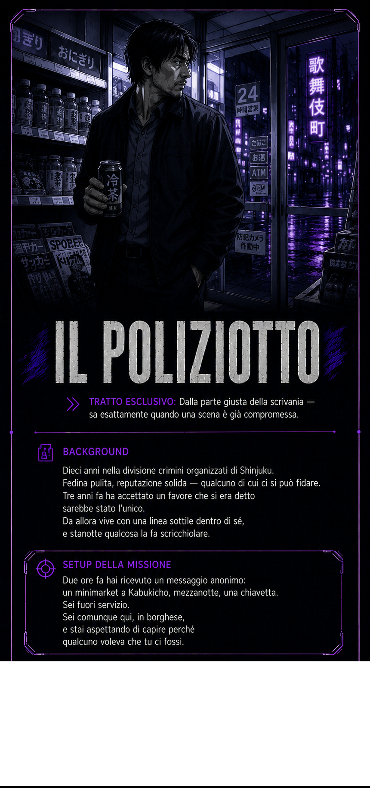

Colonna sonora — また同じ夜に, Keiko Kurosawa
Shinjuku, ottobre 2025. Sono le 23:38. Una lattina di tè freddo, ancora chiusa. Stai aspettando qualcosa che non sai ancora cos'è.
Apri ChatGPT (o un'altra chat AI)
Incolla il testo copiato
Premi invio — la partita inizia